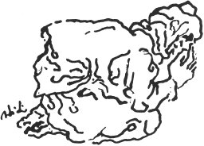

VELİ EFENDİNİN AĞIDI
Kozanın Ayşe Hoca köyünden Veli Efendiyi yakın köy Anavarzadan olan Eşkıya Çolak vuruyor. 1930'larda bu ağıdı Veli Efendinin kız kardeşi Zeliha Hanım yakıyor.
İnce Veli Efendim ince
Kaput giyer dal boyunca
Yeni dünyana doydun mu
On beş kurşunu yeyince
Konağı çardaktan yüce
Düşmanları gezer gece
İtibarlı babam oğlu
Başucunda çifte hoca
Savrun Sumbasın karşısı
Kapısı Halep çarşısı
Öldürmüşler Veli Beyi
Yok imiş yakın komşusu
Sultan yolar yüzlerini
Zelha deler dizlerini
Öldürme babam oğlunu
Kurban ver'rim kızlarını
Geldi çardağa dayandı
Selefi Sultan uyandı
Kalk gidelim babam oğlu
Ak gömlek kana boyandı
Gözlerin kör ola Çolak
Dile dileğin verelim
Öldürme babam oğlunu
Bin altın daha verelim
Veli Efendim dam tutturmuş
Söylemişler değmiş nazar
Adanaya vardım idi
Ali Saip ile gezer
Kırbacının ucu gümüş
Düşmanlar öldür'rüm demiş
Öldüğünü duydumola
Arkadaşı Zahit Çavuş
Sinek mi çoktu kanına
Düşman mı geldi yanına
Kalk gidelim babam oğlu
Kurdoğlu geldi yanına
Savrun Sumbasın karsısı Savrun da, Sumbas da Torosların güney yamaçlarından çıkan ve Anavarza yakınlarında Ceyhan ırmağına dökülen iki çaydır. İkisi de aşiret adını taşır. Birisi Sumbaslı ikincisi Savrunlu aşiretinin adını taşır. Sumbaslılar daha Sumbas çayı yöresindedirler. Savrunlu yitmiştir.
Kapısı Halep kapısı Evine o kadar çok konuk iner ki, Halep gibi kalabalık.
Ali Saip Ursavaş Urfa kahramanı. Adana Mebusu.
Kurdoğlu Kozan Beylerinden.